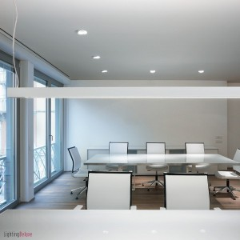
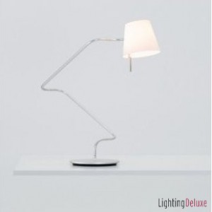

Tipps für künstliche Beleuchtung im Büro

Wenn Sie die Beleuchtung in Ihrem Büro planen oder ändern wollen und unseren ersten Artikel zum Thema ergonomische Beleuchtung im Büro gelesen haben, stehen Sie jetzt vermutlich vor der Qual der Wahl. Die Entscheidung zwischen einer in ergonomischer Hinsicht hohen Beleuchtungsqualität und einem energieeffizienteren Beleuchtungskonzept ist nicht immer einfach. Wer sich aus Kostengründen für eine Standardbeleuchtung entscheidet, wird im Folgenden einige wissenswerte Hinweise finden, die Sie bei der Lichtplanung bzw. bei der Auswahl Ihrer zukünftigen Büroräume unterstützen können.Als besonders vorteilhaft für die Beleuchtung in Büroräumen hat sich eine Kombinationen aus einer allgemeinen Raumbeleuchtung mit direktem und indirektem Licht sowie einer flexiblen Platzbeleuchtung mit direktem Licht erwiesen. Für die Grundbeleuchtung im Büro kommen in den meisten Fällen Deckenein- bzw. Deckenanbauleuchten oder Pendelleuchten zum Einsatz, die mit Spiegelrastern versehen sind, um störende Blendungen zu vermeiden, und zudem mit energieeffizienten Kompaktleuchtstofflampen der Lichtfarbe Tageslichtweiß bestückt werden können.
Sie werden entweder parallel zum Fenster oder quer zur Blickrichtung des am Arbeitsplatz sitzenden Mitarbeiters angebracht. Speziell für Räume mit hohen Decken gibt es diese Rasterleuchten im Übrigen auch in Form von Stehleuchten; sie sind in diesem Fall wesentlich energieeffizienter als Deckenleuchten, da andernfalls wesentlich mehr Leuchtmittel eingesetzt werden müssten, um auf der Schreibtischoberfläche die geforderte Beleuchtungsstärke von 500 Lux zu erziehen.
Für die tieferen Raumbereiche können ergänzend zu den vorgenannten Leuchtenmodellen außerdem Downlights bzw. Wallwashers zum Einsatz kommen, die helles Licht vor den Schränken und Regalen bieten oder die Architektur betonen bzw. ein sanftes, indirektes Licht erzeugen, indem es von der Wand reflektiert und in den Raum abgegeben wird.
Schließlich wären insbesondere für Büros mit vielen Schränken und Regalen Schienen-, Seil- bzw. Stangensysteme hilfreich, da an jeder beliebigen Stelle des Trägersystems Leuchtenköpfe montiert und deren Lichtkegel unabhängig von einander auf das Innere der einzelnen Möbel ausgerichtet werden kann.
Die vorgeschriebene Beleuchtungsstärke von 500 Lux stellt hierbei einen Mindestwert dar. Da jedoch zum einen höhere Beleuchtungsstärken bei Konzentrationsaufgaben als angenehmer empfunden werden und ältere Mitarbeiter generell einen höheren Lichtbedarf haben als jüngere, zum anderen aber auch die Leuchten selbst mit zunehmenden Alter an Leuchtkraft verlieren, ist eine Beleuchtungsstärke von 750 Lux und mehr oft ratsamer. Die Beleuchtungsstärken in der Umgebung des Arbeitsplatzes müssen derweil mindestens 300 Lux erzielen.
Damit das künstliche Licht eine aktivierende Wirkung auf die Mitarbeiter haben kann, muss es eine Lichtfarbe von mindestens 5.300 Kalvin aufweisen (ab diesen Wert wird die Lichtfarbe gemeinhin als Tageslichtweiß bezeichnet). Neben den oben genannten Leuchtstofflampen mit hohen Blauanteil können daher auch LED-Leuchten verwendet werden, die sogar Farbtemperaturen von bis zu 8.000 Kalvin erreichen können. Allerdings sollten solche Leuchtmittel nur in Kombination von einer Beleuchtungsstärke von mindestens 1.000 Lux eingesetzt werden, da sie sonst ein unangenehmes Raumgefühl verursachen.

Ergänzend zur Allgemeinbeleuchtung sollte jedem Mitarbeiter eine eigene Schreibtischleuchte für die Platzbeleuchtung zur Verfügung stehen, mit der er das Licht zu jederzeit punktgenau und passend zur jeweiligen Sehaufgabe ausrichten kann. Auch hier sind Kompaktleuchtstofflampen und LEDs die im Stromverbrauch sparsamsten Leuchtmittel. Wie die Deckenleuchten sollten schließlich auch die Arbeitsleuchten auf dem Schreibtisch dimmbar sein. Einige LED-Schreibtischleuchten stellt etwa Online Shop LightingDeluxe.de zur Auswahl.Grundlage für die lichttechnischen Anforderungen, die eine Bürobeleuchtung erfüllen muss, bilden die DIN-Vorschriften DIN EN 12464 und DIN 5035 sowie die Bildschirmarbeitsplatzverordnung und die Arbeitsstättenverordnung, welche für jeden zugänglich sind.
Weitere Artikel

Gruselige Bürohelfer – Weg mit der Verschwendung
Als ich neulich dieses Plakat gesehen habe, hat es mich ordentlich gegruselt. Mein ersten Gedanken: Häßlich, altmodisch und Verschwendung pur! Wenn Sie verstehen wollen, was meine Arbeit, meinen Anspruch ausmacht, dann müssen Sie …

Personalverwaltung optimieren
Die Personalverwaltung ist wichtiger Bestandteil eines jeden Unternehmens. Sie verursacht jedoch häufig auch hohen Arbeitsaufwand, der vor allem bei schlechter Organisation oder fehlender IT verwirrend und kompliziert werden …